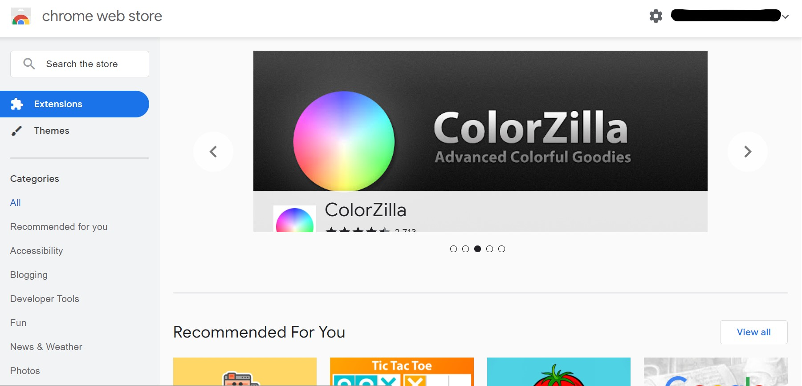
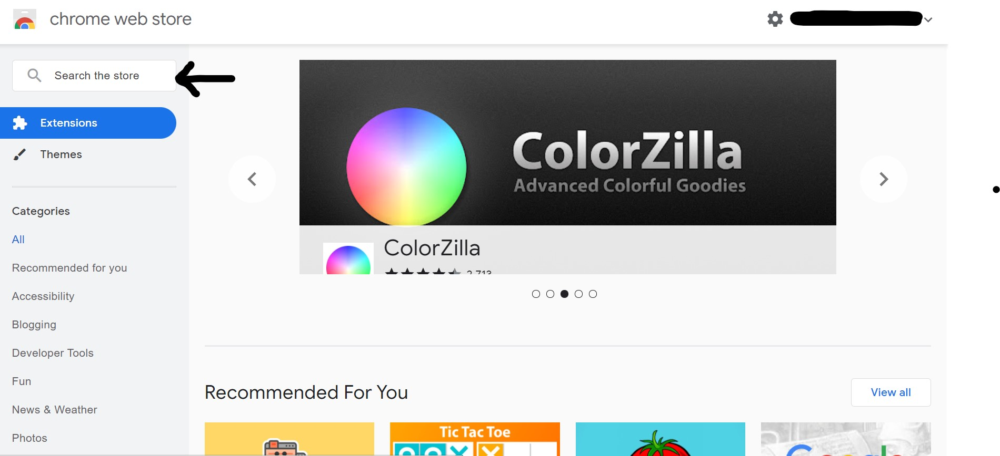
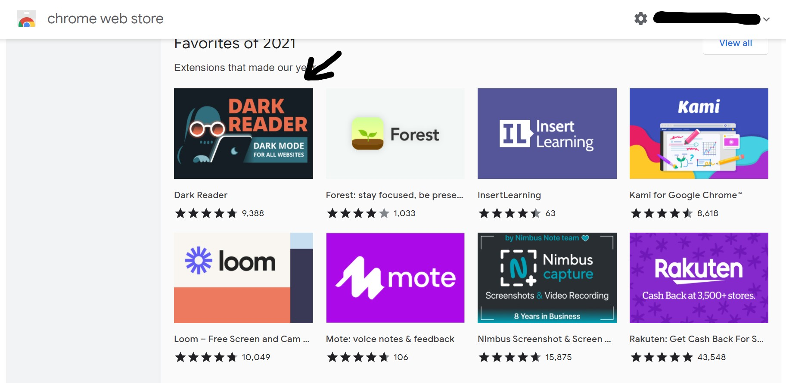
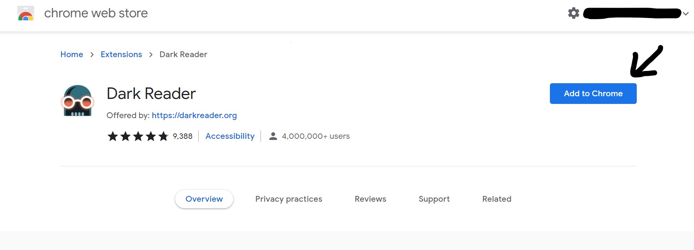

Tiện ích mở rộng của Google Chrome là các chương trình có thể được cài đặt vào Chrome để thay đổi chức năng của trình duyệt. Điều này bao gồm thêm
các tính năng mới cho Chrome hoặc sửa đổi hành vi hiện có của chính chương trình để tạo thuận tiện hơn cho người dùng.
Ví dụ về loại chức năng mà tiện ích mở rộng Google Chrome có thể thêm vào Chrome bao gồm:
Chặn quảng cáo được hiển thị
Thêm danh sách công việc hoặc ghi chú vào Chrome
Quản lý mật khẩu
Bảo vệ quyền riêng tư của bạn và giúp duyệt web an toàn hơn.
Tối ưu hóa việc sử dụng bộ nhớ để Chrome chạy hiệu quả hơn
Làm cách nào để bạn sử dụng một Tiện ích mở rộng của Google Chrome?
Để sử dụng Tiện ích mở rộng của Google Chrome, trước tiên bạn cần bấm vào liên kết này.
Đây là giao diện của nó khi bạn mở liên kết

Bây giờ bạn bấm vào chỗ ghi "tìm kiếm cửa hàng" để tìm kiếm. Như trong hình

Khi bạn hoàn tất việc tìm thấy tiện ích mở rộng của mình, hãy nhấp vào nó

Và cuối cùng bạn bấm thêm vào chrome

Tiện ích mở rộng Chrome tốt nhất để học tập!
Bạn biết rằng Tiện ích mở rộng của Chrome có rất nhiều loại. Thích bảo vệ web của chúng tôi khỏi vi-rút hoặc tin tặc
và một số có thể làm cho chrome của bạn chạy tốt hơn. Nhưng bây giờ tôi sẽ cho bạn biết tất cả các Tiện ích mở rộng của Chrome rằng
có thể giúp bạn học tốt hơn